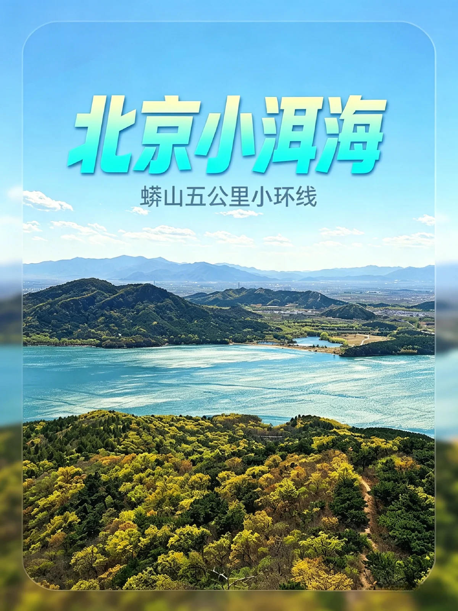
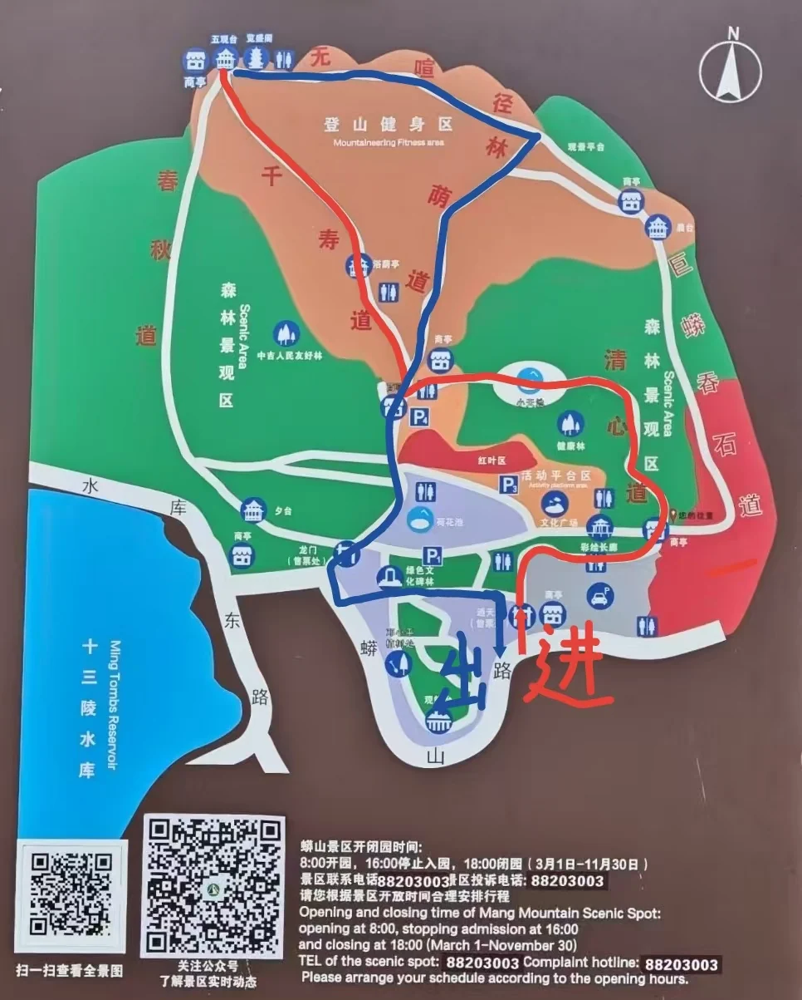

蟒山 + 十三陵水库观景
春季周末 · 轻松上山、看水库和长廊的一条低压力恢复线
北京·昌平
蟒山水库观景
5.0h
44km
5.5km / 137m / 2.0h
L4 可执行
五道口出发
封面速览



图片优先用真实 session 下的小红书搜索结果卡片图做 vibe 层理解；徒步定量以六只脚页面为准，目的地公开信息以携程 / Bing / 点评公开结果补证。
行程卡
| 字段 | 内容 |
|---|---|
| 区域 | 北京·昌平 |
| 主题 | 蟒山水库观景 |
| 总时长 | 5.0h |
| 预估自驾 | 44km |
| 徒步参数 | 5.5km / 137m / 2.0h |
| 强度 | 轻度 |
| 适合 | 想出门但不想太累 / 适合带爸妈或小朋友 / 只想轻松看看山和水库 |
| 一句话结论 | 它不是最野的一条，却是最好安排、最不费力、最容易临时成行的一条。 |
路线摘要
蟒山更像“恢复线”而不是“挑战线”。如果你本周只想轻松上山、看看十三陵水库和大佛长廊，不想被爬升压住节奏，这条非常合适。
🏞️ 目的地介绍
六只脚的 trip 9921839 直接给出了一个很适合周末恢复的版本：5.5km、累计上升 137m、历时约 2h，难度简单。Bing 搜索“蟒山 大众点评”能读到景区攻略和“俯瞰十三陵水库、适合带娃”的公开描述，说明它更偏舒展型出行。
✨ 搭配内容
这条的搭配内容不一定非要是某一家餐厅，反而更适合“山 + 水库观景 + 长廊 / 大佛”的组合。小红书“蟒山 徒步”里能看到不少亲子和轻运动内容，说明它天然就是一条低门槛周末线。
推荐行程安排
| # | 安排 | 时长 |
|---|---|---|
| 1 | 五道口出发，直接去蟒山国家森林公园一带停车 | 1.0h |
| 2 | 用最稳的轻松版线路上山，重点看水库和观景点 | 2.0h |
| 3 | 下山后在景区周边慢走 / 看长廊 / 补给休息 | 1.0h |
| 4 | 返程，不需要很赶 | 1.0h |
多源验证速记
六只脚
参考轨迹：9921839。页面可读到 5.5km、137m、约 2 小时，适合作为恢复版上新路线。
小红书
“蟒山 徒步”能稳定看到北京本地轻运动、亲子、周末散心类内容。
点评 / Bing
Bing 的“大众点评 蟒山”结果明确提到俯瞰十三陵水库、适合带娃和轻松登高，能给到目的地调性。
携程
蟒山国家森林公园公开景点资料成熟，适合作为景区层面的基础验证。
为什么保留这条
- 补齐了当前站点里缺少的“低压力恢复线”。
- 适合作为天气一般、体力一般、临时起意时的备选。
- 和大黑山 / 凤凰岭形成明显强度梯度，方便以后做分层推荐。
临门一脚 / 风险提示
- 如果你追求野趣和空旷感，蟒山会显得太规整。
- 景区感比野线更强，周末人流与亲子客可能不少。
- 它更像“舒展出门”，不是“硬核徒步”。